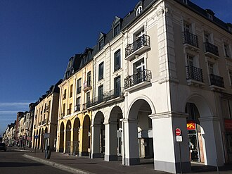
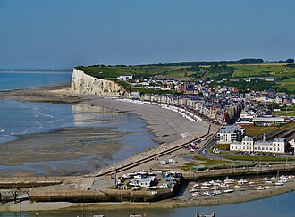
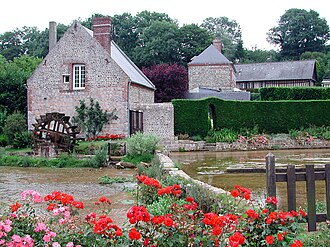
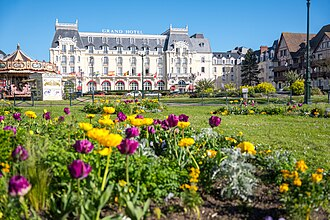
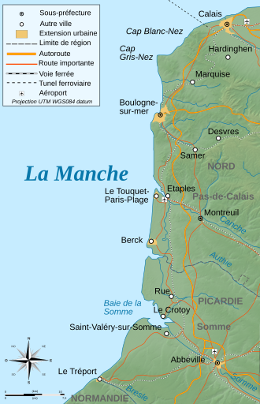
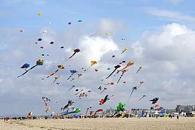

Toutes les côtes accessibles en ~2h à 2h30 de voiture passées au crible : temps de route réels, prix du foncier, et une trentaine d'annonces actives (constructibles et terrains de loisirs) relevées sur Leboncoin, PAP, SeLoger, Superimmo, EtreProprio, Logic-Immo, terrain-construction.com et les agences locales.
Hors trafic, tout le littoral normand et picard se joue entre 1h50 et 2h40 de Paris. Ce qui départage vraiment les zones, c'est le type de plage, le prix du m² et ce qu'on veut faire du terrain.
La mer la plus proche de Paris en kilomètres (195 km) et quasi la plus rapide (~2h05). Falaises de craie, plages de galets, vraies villes à l'année. Foncier doux : 50–130 €/m².
~2h de pure autoroute par l'A13, plages de sable fin, gares directes. C'est le secteur chic : comptez 300–600 €/m² (jusqu'à 1 500 €/m² à Trouville/Villers hyper-centre).
~2h10–2h30 par l'A16. Sable, dunes, phoques, lumière incroyable. Le gisement des terrains de loisirs non constructibles à petit prix (4–9 €/m²) et du constructible abordable.
Départ Paris centre, hors trafic, itinéraire le plus rapide (péages sur tous les trajets, 15–25 €). La sortie de Paris et les derniers kilomètres de départementales font la différence, plus que la distance.
Six secteurs, six ambiances — tous à portée d'un aller-retour dans la journée depuis Paris.

« La plage la plus proche de Paris ». Ville vivante à l'année, marché réputé, gare. Autour : Pourville, Varengeville, Quiberville, Berneval — des villages de falaises avec de vraies opportunités foncières.

Les plus hautes falaises de craie d'Europe, le front de mer Belle Époque de Mers-les-Bains, des prix très doux. Le constructible le moins cher du littoral (Ault, Criel, Le Tréport).

Veules-les-Roses (plus beau village), Saint-Valery-en-Caux, Veulettes, les Petites-Dalles, Fécamp, Étretat. Le charme normand classique, avec du foncier encore accessible hors Étretat.

Deauville, Trouville, Villers, Houlgate, Cabourg, Merville, Ouistreham : sable fin, digues-promenades, trains directs. Le secteur le plus cher mais le plus « carte postale ».

Le Crotoy (seule plage de sable exposée sud du Nord), Saint-Valery-sur-Somme, Cayeux, Pendé, Quend, Fort-Mahon. Phoques, Marquenterre, chemins de planches — et les terrains les moins chers du dossier.

Berck l'abordable et familiale, Merlimont, Stella-Plage, et Le Touquet le chic (foncier 400–1 000 €/m²). À réserver si le budget suit ou si on vise la plage XXL.
Une trentaine de terrains actifs repérés lors de la recherche. ⭐ = les meilleurs plans selon moi. Les prix affichés incluent généralement les honoraires ; tout est à re-vérifier, les annonces partent vite.
| Commune | Prix | Surface | €/m² | Statut | Mer | Paris | Annonce | |
|---|---|---|---|---|---|---|---|---|
| ⭐ | Petit-Caux (Berneval) Seine-Maritime · 10 min de Dieppe |
85 000 € | 1 419 m² | 60 | ⚠ Partiellement constructible | 200 m | ≈ 2h10 | Superimmo ↗ |
| ⭐ | Cayeux-sur-Mer Somme · Baie de Somme |
18 000 € | 4 970 m² | 4 | Loisirs (non constructible) | ~1,5 km | ≈ 2h30 | EtreProprio ↗ |
| ⭐ | Ault Somme · falaises |
26 500 € | 537 m² | 49 | ✓ Constructible ⚠ vérifier érosion | < 1 km | ≈ 2h20 | mamaison-bois ↗ |
| ⭐ | Cayeux-sur-Mer Somme · « à quelques pas de la plage » |
99 000 € | 621 m² | 159 | ✓ Constructible | < 300 m | ≈ 2h30 | EtreProprio ↗ |
| ⭐ | Périers-en-Auge Calvados · proche Cabourg, bord de la Dives |
19 500 € | 450 m² | 43 | Loisirs ✓ eau + assainissement | ~3 km | ≈ 2h15 | iad France ↗ |
| Le Tréport Seine-Maritime |
40 000 € | 469 m² | 85 | ✓ Constructible, viabilisé | ~1,5 km | ≈ 2h10 | Logic-Immo ↗ | |
| Veulettes-sur-Mer Seine-Maritime · bord de Manche |
45 000 € | 650 m² | 69 | ✓ Constructible | < 1 km | ≈ 2h25 | Terrain-Construction ↗ | |
| Cayeux-sur-Mer Somme · près des dunes |
22 000 € | 2 994 m² | 7 | Zone naturelle | < 500 m | ≈ 2h30 | Leboncoin ↗ | |
| Cayeux-sur-Mer Somme · terrain boisé |
23 000 € | 4 320 m² | 5 | Loisirs (non constructible) | ~1,5 km | ≈ 2h30 | EtreProprio ↗ | |
| Cayeux-sur-Mer Somme · « rare à la vente » |
100 000 € | 663 m² | 151 | ✓ Constructible | < 500 m | ≈ 2h30 | EtreProprio ↗ | |
| Pendé (Sallenelle) Somme · sortie de St-Valery-sur-Somme |
28 000 € | 472 m² | 59 | ✓ Constructible | ~1,5 km (baie) | ≈ 2h20 | EtreProprio ↗ | |
| Pendé Somme |
49 600 € | 960 m² | 52 | ✓ Constructible | ~1,5 km (baie) | ≈ 2h20 | EtreProprio ↗ | |
| Quend Somme · zone agricole |
27 000 € | 3 141 m² | 9 | Agricole ⚠ annonce à confirmer | ~3,5 km | ≈ 2h23 | les-terrains.com ↗ | |
| Le Crotoy Somme · Baie de Somme, plage de sable |
66 000 € | 450 m² | 147 | ✓ Constructible | < 1 km | ≈ 2h17 | les-terrains.com ↗ | |
| Mers-les-Bains Somme · front de mer Belle Époque |
57 420 € | 463 m² | 124 | ✓ Constructible | ~1 km | ≈ 2h10 | Vizzit ↗ | |
| Fort-Mahon-Plage Somme · réseaux en bordure |
102 000 € | 1 365 m² | 75 | ✓ Constructible | ~1,5 km | ≈ 2h23 | SeLoger ↗ | |
| Criel-sur-Mer Seine-Maritime |
56 000 € | 620 m² | 90 | ✓ Constructible | ~2 km | ≈ 2h15 | Terrain-Construction ↗ | |
| Criel-sur-Mer Seine-Maritime · fibre + tout-à-l'égout |
84 900 € | 1 176 m² | 72 | ✓ Constructible | ~2 km | ≈ 2h15 | Terrain-Construction ↗ | |
| Saint-Valery-en-Caux Seine-Maritime · port de plaisance |
55 900 € | 1 118 m² | 50 | ✓ Constructible | ~1,5 km | ≈ 2h20 | Terrain-Construction ↗ | |
| Veules-les-Roses Seine-Maritime · « plus beau village » |
55 900 € | 1 000 m² | 56 | ✓ Constructible | ~1 km | ≈ 2h22 | Terrain-Construction ↗ | |
| Gueutteville-les-Grès Seine-Maritime · entre St-Valery et Veules |
47 470 € | 738 m² | 64 | ✓ Constructible | 4 km | ≈ 2h20 | Terrain-Construction ↗ | |
| Penly Seine-Maritime · proche Dieppe |
58 000 € | 1 000 m² | 58 | ⚠ CU obtenu, statut à vérifier | ~1,5 km | ≈ 2h15 | Superimmo ↗ | |
| Hautot-sur-Mer (Pourville) Seine-Maritime · entre Dieppe et Varengeville |
135 000 € | ~1 000 m² | 135 | ✓ Constructible | ~1 km | ≈ 2h08 | Les Valleuses ↗ | |
| St-Martin-aux-Buneaux Seine-Maritime · Petites-Dalles à 2 km |
75 000 € | 1 300 m² | 58 | ✓ Constructible | ~2 km | ≈ 2h25 | Terrain-Construction ↗ | |
| Ste-Hélène-Bondeville Seine-Maritime · 5 km de Fécamp |
49 000 € | ~860 m² | 57 | ✓ Constructible | ~5 km | ≈ 2h20 | Fécamp Immo ↗ | |
| Houlgate Calvados · cœur de ville |
115 500 € | 323 m² | 358 | ✓ Constructible | ~500 m | ≈ 2h12 | Superimmo ↗ | |
| Villers-sur-Mer Calvados · Côte Fleurie, sable |
129 600 € | 334 m² | 388 | ✓ Constructible à viabiliser | ~1 km | ≈ 2h10 | Superimmo ↗ | |
| Honfleur Calvados · estuaire |
126 500 € | 702 m² | 180 | ✓ Constructible, libre de constructeur | ~1,5 km | ≈ 2h05 | EtreProprio ↗ | |
| Hermanville-sur-Mer Calvados · Côte de Nacre |
108 000 € | 400 m² | 270 | ✓ Constructible | ~1,5 km | ≈ 2h25 | Logic-Immo ↗ | |
| Ouistreham Calvados · parc résidentiel de loisirs |
149 000 € | 203 m² | — | PRL ✓ bungalow 2 ch. inclus | ~1 km | ≈ 2h25 | Superimmo ↗ | |
| Ouistreham Calvados · 3 garages + hangar |
213 000 € | 467 m² | 456 | ✓ Constructible | ~600 m | ≈ 2h25 | Superimmo ↗ | |
| Courseulles-sur-Mer Calvados · Côte de Nacre |
220 000 € | 348 m² | 632 | ✓ Constructible | ~500 m | ≈ 2h30 | Logic-Immo ↗ | |
| Trouville-sur-Mer Calvados · lotissement 8 lots viabilisés |
dès 210 000 € | lots variés | — | ✓ Constructible, viabilisé | ~1,5 km | ≈ 2h05 | Superimmo ↗ | |
| Berck-Plage Pas-de-Calais · 1 km de la plage |
117 700 € | 546 m² | 216 | ✓ Constructible | ~1 km | ≈ 2h30 | EtreProprio ↗ | |
| Merlimont Pas-de-Calais · proche Stella-Plage |
85 500 € | 464 m² | 184 | ✓ Constructible | ~1,5 km | ≈ 2h32 | SeLoger ↗ | |
| Pendé / Lanchères Somme · marais, hutte de chasse |
78 000 € | ~2,5 ha | 3 | Marais (loisirs/chasse) | ~500 m (baie) | ≈ 2h20 | EtreProprio ↗ |
Prix au m² arrondis. « Mer » = distance approximative à la plage ou à la baie. Temps de route hors trafic depuis Paris centre. Relevé du 23 juillet 2026 — certaines annonces peuvent avoir été vendues ou retirées.
Leboncoin, PAP et SeLoger bloquent les robots : voici les recherches déjà filtrées, à ouvrir dans ton navigateur. Astuce : crée une alerte e-mail sur chacun, les bons terrains partent en quelques jours.